<!DOCTYPE html>
<html lang="en"></html>

<head>
        <meta charset="utf-8"/>
        <title>IXD104</title>
    
    
    <link href="css/style.css" type='text/css' rel='stylesheet' />
  
    <!----- link to google fonts ----->
        
</head>

<body>
    <article id="top">
    <header>
        <h1>IXD 104</h1>
        <h3>Work posted on my Tumblr page from IXD 104 and lecture notes</h3>
        
            <nav>
            <ul>
            <li><a href="#week01">Week 01</a></li>
            <li><a href="#week02">Week 02</a></li>
            <li><a href="#week03">Week 03</a></li>
            <li><a href="#week04">Week 04</a></li>
            <li><a href="#week05">Week 05</a></li>
            <li><a href="#week06">Week 06</a></li>
            <li><a href="#week07">Week 07</a></li>
            <li><a href="#week08">Week 08</a></li>
            <li><a href="#week09">Week 09</a></li>
            <li><a href="#week10">Week 10</a></li>
            <li><a href="#week11">Week 11</a></li>
            <li><a href="#week13">8th May 2019</a></li>
            </ul>
        </nav>
        
<p>This repository is created for the purpose of organising my lecture notes and tumblr posts for IXD 104, so that it is easy to find sections in my work and the research I used to support my work.</p>
         </header>
<!----START OF WEEK ONE----->        
        <h2 id="week01">Week 01- tutorial notes</h2> 
        <ul>
            <li>No lecture St Patricks day</li>
            <li>Visualising data</li>
            <li>A cornucopia of charts</li>
            <li>Desigining with Data</li>
            <li>Illustration 30%</li>
            <li>Diagram 30%</li>
            <li>Reserach 40%</li>
            <li>Disgrams</li>
            <li>John Wicks</li>
            <li>Best in show the ultimate data dog</li>
            <li>Rembrandt focused copy</li>
            <li>Tim’s micons </li>
            <li>Viva bells rockets </li>
            <li>1. an icon set trains planes and automobiles</li>
            <li>2. city illustration</li>
            <li>3. travel app</li>
            <li>Home screen</li>
            <li>Pick a city</li>
            <li>Detail of city</li>
            <li>Working prototype </li>
            <li>Must be sketch/illustrator</li>
         </ul>
        
<p> Tasks to carry out for next week:</p>
         <ol>
             <li>Set up research blog</li>
             <li>Identify travel apps- what does it do/Why did you choose it</li>
             <li>Train your eyes</li>
             <li>Recreate the travel icons </li>
             <li>Mind map and idea 4 travel app</li>
             <li>Look up some illustrations</li>
        </ol>
        <br>
    <h2>Tumblr Posts</h2>
        <h3>Master-Apprentice</h3>
        <p>On Friday, Kyle described to us how it is good practise to try recreate successful designs, to try improve or own skills on creating icons. Using the images below, I decided to choose 4 designs to recreate.</p>
    
    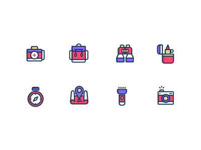
        <p>Below are my attempts, please forgive that they are definitely not as refined as Kyle’s, but I gave it a go!</p>
    
    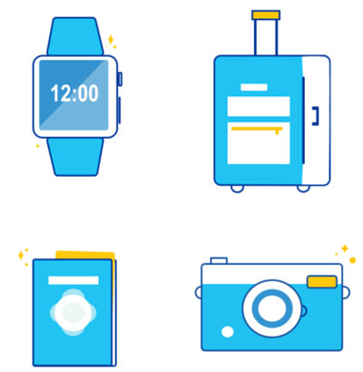
  <hr>      
    <h3>Travel apps</h3>
    <p>Below I will be looking at different travel apps for different purposes, to give me insight as to what is out and what is useful/helpful when travelling, so when I design/decide what app I to create I have an idea as to layouts, icons, colours etc. Below I will look at 2 apps, one that is rarely used, the other that is used on a daily basis by thousands of people in London.</p>

    
        <p>I have decided to look at Waze first. Waze is a traffic app, that monitors traffic, delays, police checks and public alerts.</p>
     
     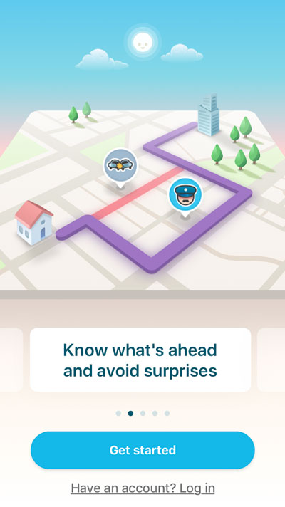
     
     
     
    <p>I really liked the colour scheme for this app, and how illustrative it is, with detailing to the 3D drawings.</p>
     
    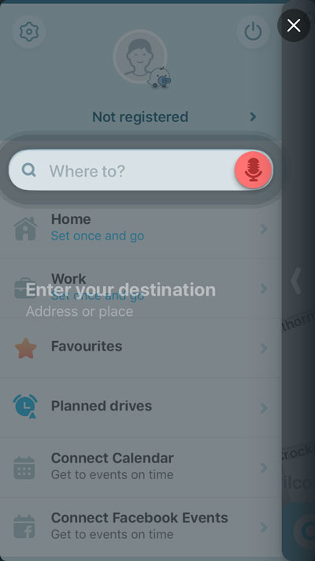
    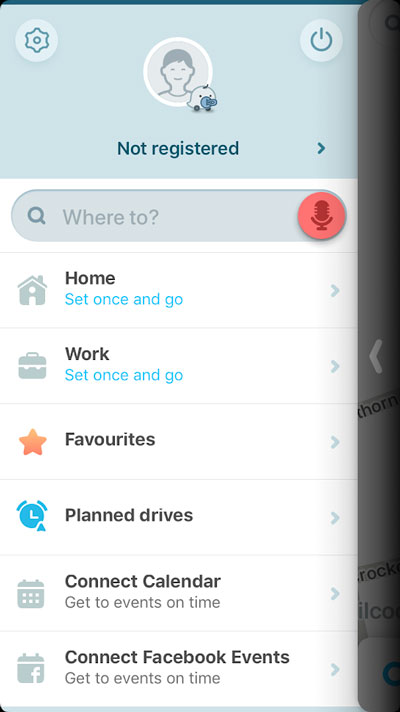
    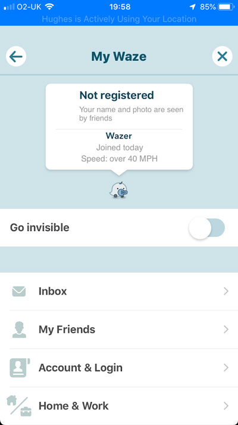
    
    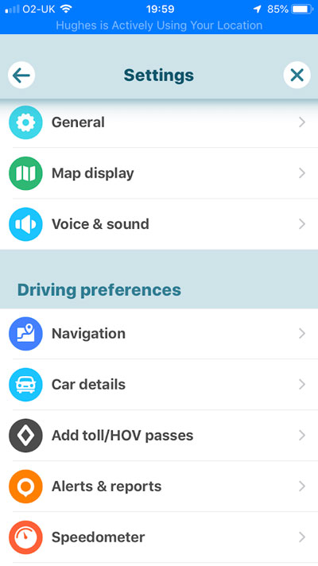
    <p>Icons are simple but instantly recognisable. It is clear that a lot of thought has been considered when it came to layout, it is easy to navigate with a consistent illustrative theme throughout.</p>
     
    <p>The home page is a map with an icon symbolising the users location, again it is simple, minimal yet effective as the text is kept to a minimum. </p>
    <br>
    <p>I really like the Waze app due to its simplicity in style and consistent illustrative them throughout. However, I feel the purpose of the app could have been improved upon, as only users who have the app can text in information.</p>
    
    <h3>Tubemap</h3>
        
    <p>The second app I decided to look at was the TubeMap map way app, used widely for undergrounds in London. I decided to look at this because it is used daily and needed if you live in London.</p>
        
        
    <p>The app explains how to use the app however, could go into more depth.</p>
        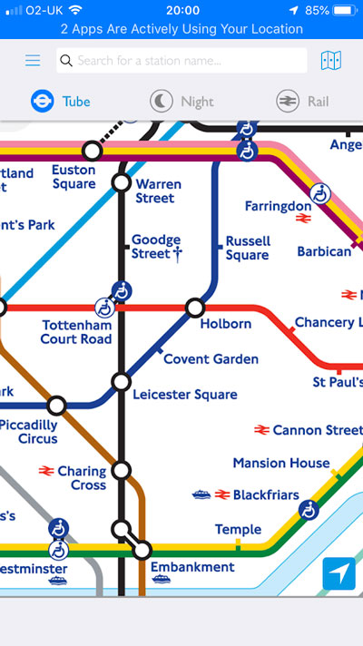
        
        
    <p>The app shows the lines that run throughout the day/ night and the railway, meaning that the public have access to all transport routes.</p>
        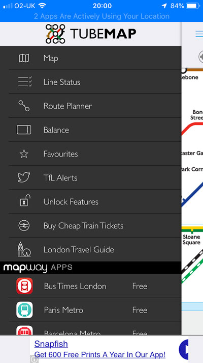
        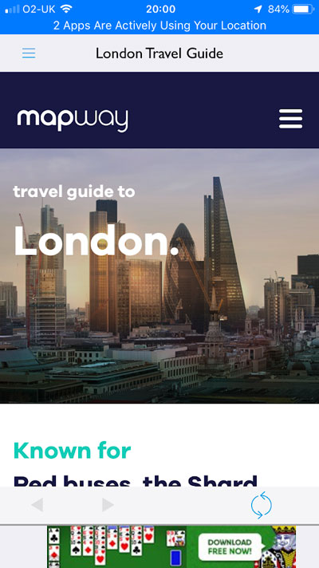
    <p>The app also offers other functions such as a travel guide in London as well as other map way apps, such bus times in London and tube maps for Paris, New York etc.</p>
        
        
        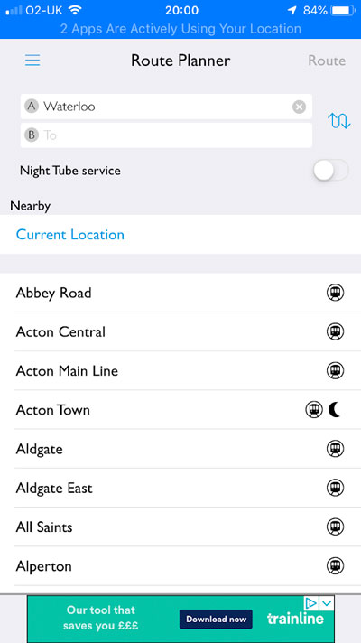
    <p>The app offers various different features, and has a consistent theme throughout it.</p>
    <br>
    <p>However, the app is very text heavy and could be more creative with using the route colours rather then text and more symbols.</p>
        <br>
        <hr>
    <h3>Further Travel App Research</h3>
    <p>So I have decided to go back and look at some more travel apps today, to broaden my insight into travel apps.</p>
    
        <h3>Just Park</h3>
        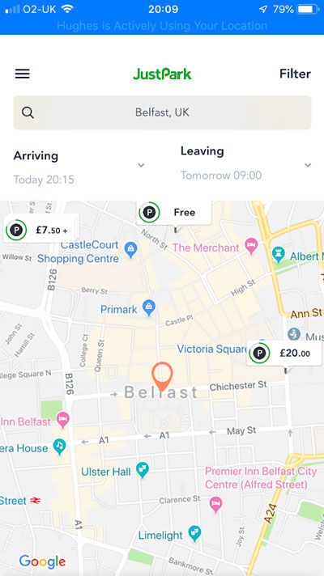
    <p>I decided to look at ‘Just Park’ as it is an unusual app, that allows you to reserve car park spaces, where will be likely to get a car park space and if the car park is located where you have to pay, you can also complete that on the app too.</p>
        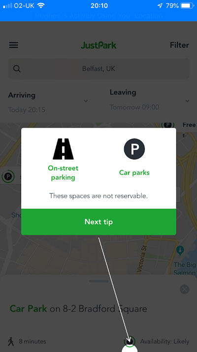
        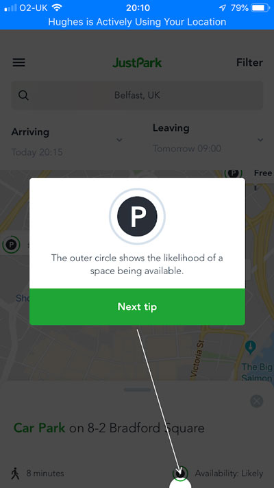
        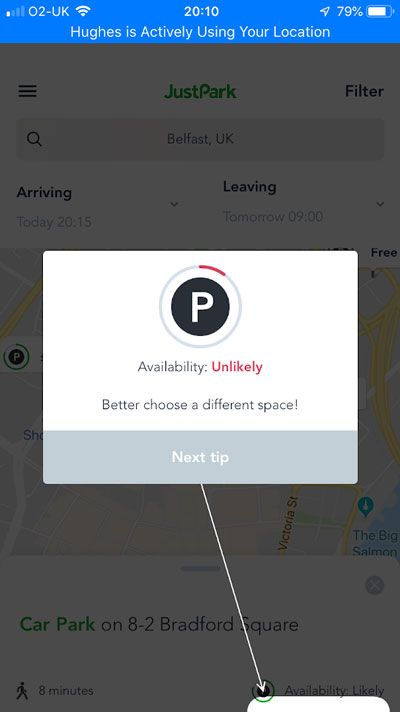
        
        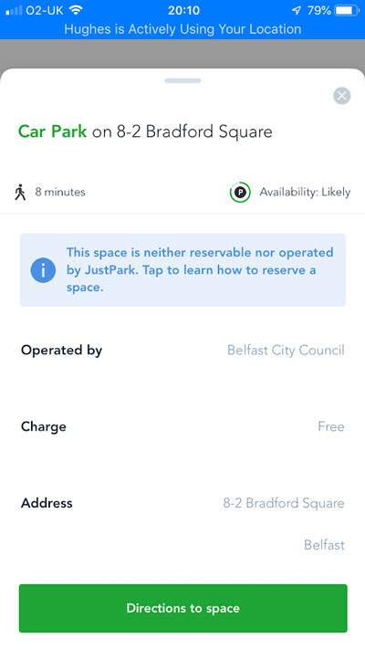
        
     <p>The app is simple to use, and has very little text in it. The icons on the map are easy to see, and tells you pricing and availability. I really like the concept of the app, and it is very useful for those who work or study in busy cities who need quick and easy car park spaces.</p>
        <br>
    <h3>Uber</h3>
        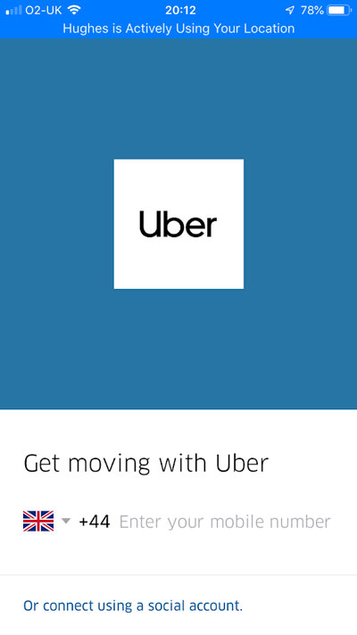
    <p>For my second app, I decided to look at ‘Uber’ which is a very popular app. </p>
        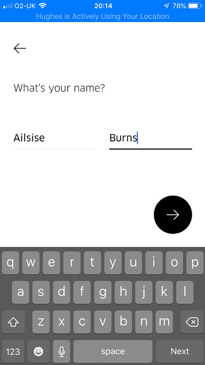
        
        
        
        
    <p>I really like the illustrative icons in the start up screens, they have a consistent colour scheme with small descriptions underneath. They are clear and relevant to the information.</p>
        
        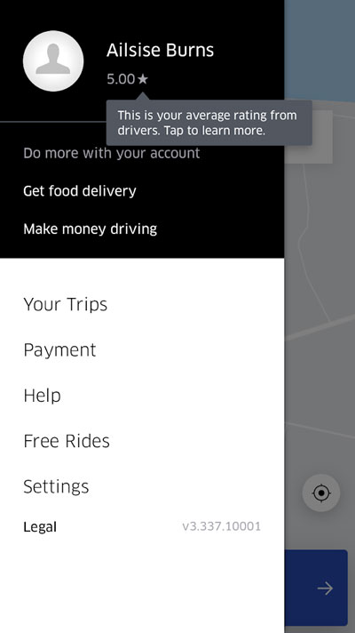
        
    <p>The homepage is very simple with little text or icons, the menu slides from the left, I feel it could actually be improved upon by adding icons, or colour, as it is very plain and boring, however I feel the try uber eats page is effective due to the large coloured image and button.</p>
      <br>  
    <h3>Disney World</h3>
        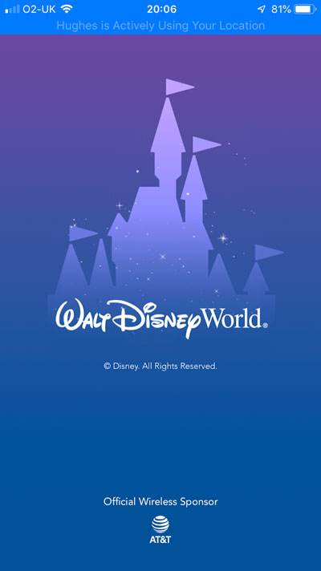
    <p>I decided to then look at the Disneyland app, which you use whilst on holiday there, I wanted to look at it because it is different from the other apps I previously looked at. </p>
        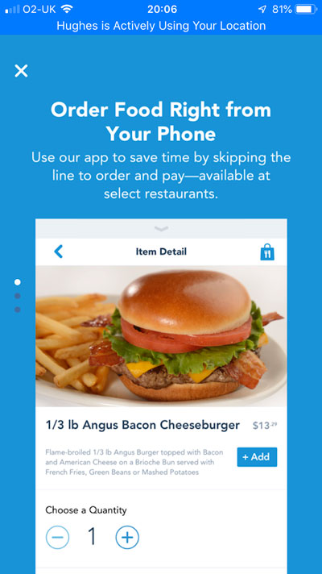
        
        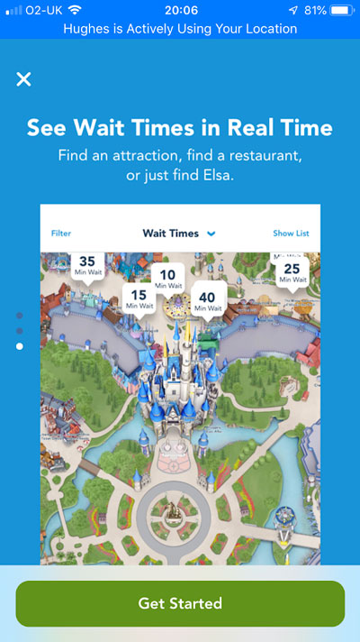
    <p>With the app, you can pre-order and pay for food, make fast pass plans and see real time waiting times for rides and attractions with the parks. I particularly like the app because it is different and really useful whilst on holiday.</p>
        
        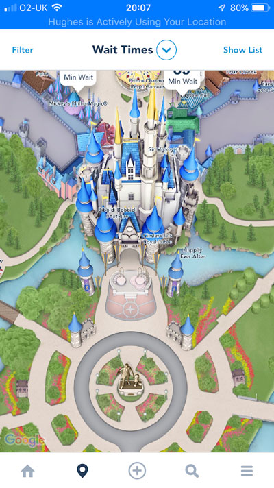
    <p>The app is colourful and shows the map accurately with detailed 3D maps that is interactive and suitable for all ages.</p>
        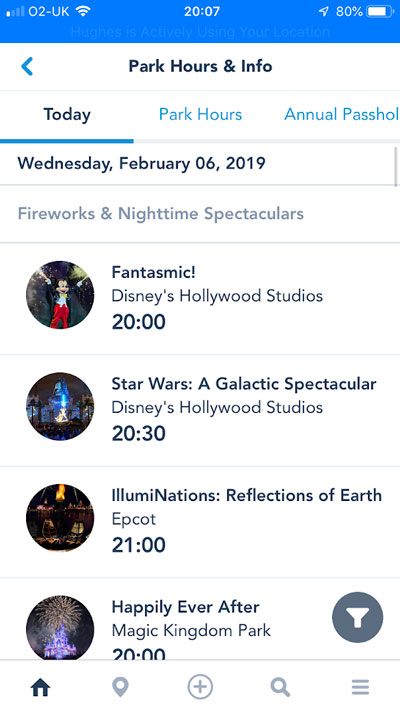
        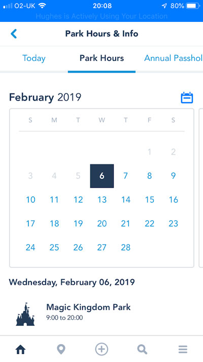
        
        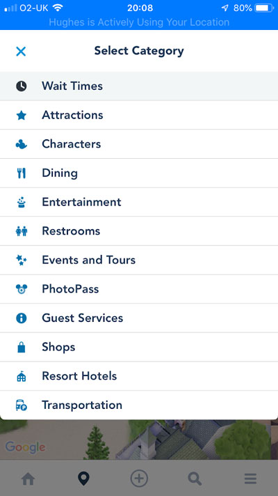
    <p>The app has a lot of useful resources, such as allowing you to see what is happening in the parks that day, buying tickets for the parks and the park hours and info, as well as attractions, characters, shops and guest service and much more. The app is colourful, descriptive and appropriate for all ages as well as relevant icons, and relevant colour scheme.</p>
        <br>
    <h3>Go Euro</h3>
        
    <p>I chose the ‘Go Euro’ app, because I really like the illustrations within the start up screen and menu, it is very calming with a nice colour scheme. I  think the menu that is dragged from the bottom is very resourceful and different.</p>
        
        
        
    <p>There is a consistent colour scheme and only text that is relevant and needed is shown. I think the icons along the footer are professional and illustrative and suit the content within the app.</p>
        <br>
    <h3>Google Earth</h3>
        
    <p>The final app is the ‘Google Earth’ app, I chose this because it is completely different to the other apps I have looked at as it acts as a virtual reality, that allows you to travel the world and look at landmarks etc.</p>
        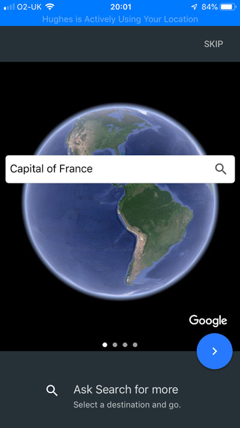
        
        
        
        
    <p>The app is extremely detailed and of high quality.</p>
        
        <p>This is the home page, it has very little on it, with only icons that represent different options.</p>
        
        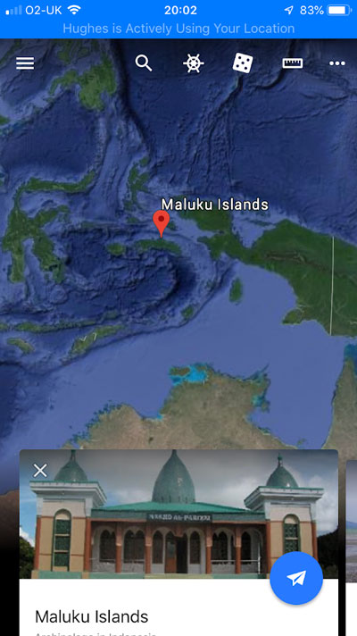
        
        
        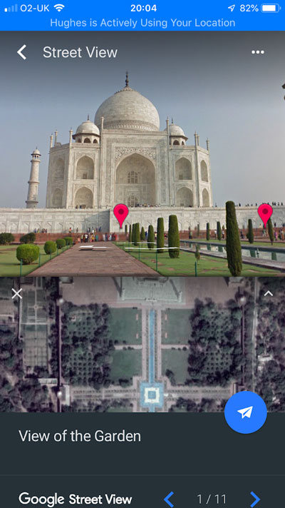
        
    <p>The app allows you to see from a street view and allows you to access information about landmarks and different areas. The app is consistent with the other google maps app.  I think the app is very different, and useful for accessing information if you are on vacation, or helpful if you can’t travel and want to see what landmarks look like.</p>
    <hr>
    <h3>Mind Mapping</h3>
    
    <p>I decided to mind map different ideas around some key words associated with travel.</p>
        <hr>
    <h3>Illustrations</h3>
        <p>Whilst on my way to Uni on Monday I found these illustrations on the walls down an alley, I decided to take some images of them and upload them, as last Friday Kyle discussed how illustrations are used as a form of story telling which is evident in these images. I thought they were so creative and really cute! They are brilliant examples of how illustrations can be used in everyday life, even in back alleys! </p>
        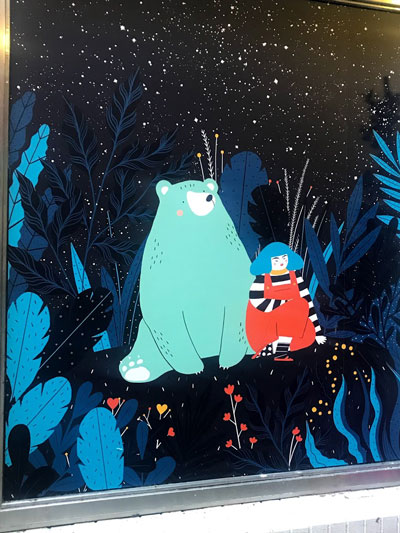
        
        
    <hr>
    <!----END OF WEEK ONE-----> 
        
        
    <!----START OF WEEK TWO----->  
    <h2 id="week02">Week 02- tutorial notes</h2> 
             <ul>
            <li>Olly Moss-Firewatch</li>
            <li>Michael Rose</li>
            <li>Rogey King?</li>
            <li>Icon design-zooming in/icon abstraction/icon set</li>
            <li>Quote from Kyle Tezak</li>
            <li>Looking at the olympics-new icon set</li>
            <li>Interfaces-Susan Kerr=first mac icons</li>
            <li>Icons are lnaguage agnostic</li>
            <li>noun project for Mac</li>
             </ul>
    <p>Icons - Here and Now</p>
            <ul>
            <li>Icons have a role</li>
            <li>Pictograms - A. Frutiger</li>
            <li>Different culture-suitability</li>
            <li>Different style</li>
            <li> Different icons; outline/glyph/hand drawn/filled/flat/skeomorphic</li>
            <li>Level of detail-less is more-needs to be recognisable</li>
            <li>Level=very important</li>
            <li>Scale-design for size purpose-dont scale down-lose readability</li>
            <li>If it is going to be many different sizes-then scale down</li>
            <li>Harmony- size,colour,line thickness etc</li>
            <li>Differentiate</li>
            <li>Required reading- icon handbook-John Hickes</li>
            <li>vic bell</li>
            <li>Tim vann Damme</li>
            <li>Sebastian de with</li>
            <li>Justas Gulabrudel</li>
            <li>Matt Yow</li>
            <li>travel app screens= Home/pick a city/detail +working prototype</li>
             </ul>
        <p> Tasks to carry out for next week:</p>
             <ol>
             <li>Recreate some more icons</li>
             <li>Create an idea (done)</li>
             <li>Mind Map (done)</li>
             <li>Start some wireframes</li>
             <li>Wireframe some ideas-research other apps and look at their layout-wireframe them for basis to work off</li>
             </ol>
    <h2>Tumblr Posts</h2>
    <h3>App Icons</h3>
    <p>So I’ve decided to search through apps to look at icons, how they are used and where they are laid out.</p>
        <h3>Instagram</h3>
        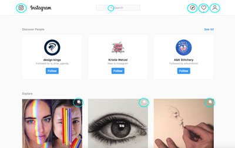
        
        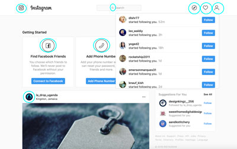
    <p>In instagram the icons are simple outlines, that are black in colour, I feel they are effective, however they could be more colourful or incorporate a colour scheme that isn’t so plain and boring.</p>
    <br>
    <h3>Facebook</h3>
        
    <p>The icons on facebook are a mixture of lines and filled icons. They generally stick to a white/blue and grey colour scheme however some are filled white, red, green, and pink. I do feel the icons are more effective compared to the instagram as there is more colour and creativity. When you select one of the icon buttons at the bottom footer, they turn into a filled coloured icon, making them more interactive and fun to use.</p>
    <br>
    <h3>Tumblr</h3>
    
    <p>The Tumblr website is similar to the facebook with bother outline grey icons, filled grey icons and also filled coloured icons, I do think the icons are creative and different, but it could be improved upon by adding a more interactive aspect like the changing of colours/icons.</p>
    <br>
    <h3>Snapchat</h3>
    
    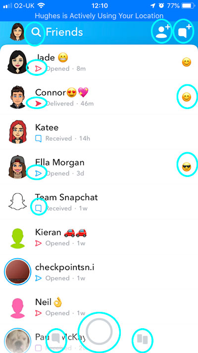
    <p>The icons on snapchat are similar to the previous, however all of the icons are filled, the icons in the header are white, and the icons along the bottom are grey, however the icons along the bottom are more interactive due to the change of colour when they are selected. Snap chat keeps a clean plain colour scheme, with no extreme colours or anything too harsh on the viewers eyes.  The icons regarding to messaging different people, as there are different coloured icons or message or snap as well as different symbols, when the arrow is only an outline that means the message has been seen and open, and if it is filled it hasn’t. When the icon is a red filled square it is a snap that hasn’t been open, when it is an outline it means it has been open. The filled blue message symbols represent an unopened message, when it is only an outline it means it has been open. I feel these small changes in icon style and shape makes such a difference and makes the icons more interactive out of all of the apps I decided to look at.</p>
    <h3>Did someone say Mindmap?</h3>
        
    <p>SO! I came up with an idea as to what my app might consist of, however! It was very similar to apps already out there! So I decided to do some more mind mapping of ideas! Im really interested in history, traditions and due to some inspiration(Netflix documentaries- Don’t Judge!) crime! Bit random I know, but why not? The idea I have in mind at the minute, is a sort of like an app based in America, where you can select a city and it can tell you which notorious criminal lived there, any constructive feedback would be very welcome at the moment! </p>
    <h3>Wireframes</h3>
        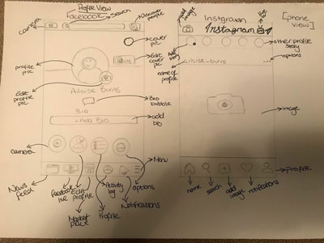
        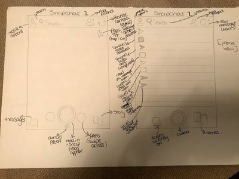
        
    <p>So I decided to recreate some different app wireframes, to give me an idea of different functions, icons, and illustrations that may be consistent within apps. I did this with facebook, Instagrams, two Snapchat screens and two different travel apps; Just Park and Go Euro. I labelled the wireframes to give me understanding of the functions of the icons.</p>
    <h3>My App Wireframes</h3>
        
        
        
    <p>So I have done my first version of my app wireframes, Im going to focus on ¾ four screens for the app, to give an essence of the concept, content and functionality of the app. I also then tried out some illustrations that I may include, I am struggling with how to make the home screen interesting and illustrative. I definitely feel like this might some work done to it.</p>
<h3>Icons</h3>
        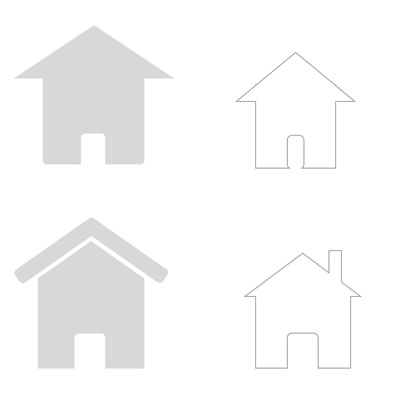
        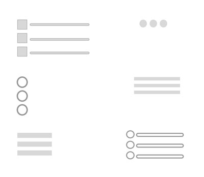
        
    <p>I decided to try out recreating some simple frequently used icons, to try out different styles.  I went onto the noun project website for some inspiration and other icons due to the variety of different styles and icons. I recreated a home icon, Menu icons and search icons.</p>
<h3>What is an Icon?</h3>
    <p>An Icon is a visual symbol, and representation of an item which it signifies. Icons are commonly found on computer screens, options and windows. Icons can represent instructions, options, and programs which will allow the user to select by clicking on using a cursor. Icons are really useful in signage and bi-lingual situations, as they tend to be simple and recognisable, without needing words.</p>
    
    
    
<h3>What is an Illustration?</h3>
    <p>Due to the fact that not only will icons feature in my app, but so will some illustrative work, I decided I would look into the actual definitions of what an Illustration is.</p>
    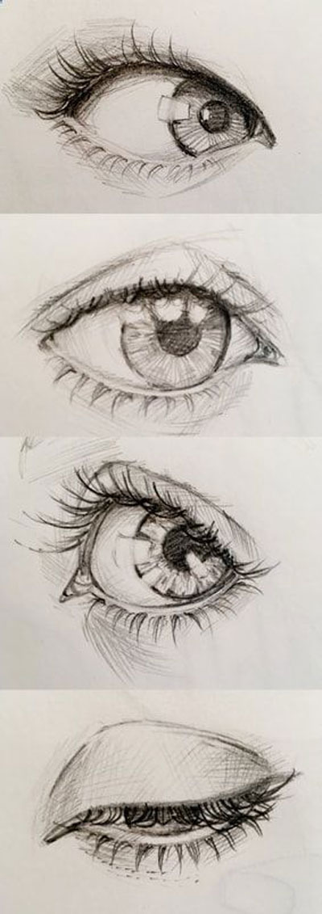
    <small>Image by Aya Devin</small>
    <p>An illustration can represent a story, or an idea. Illustrations can be used for decorations, or visual representation of processes/concepts. Illustrations can be found in books, newspapers, brainstorming as well as in sketch books, and art work.</p>
    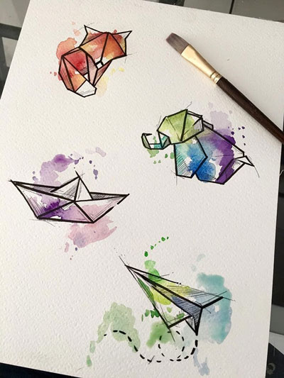
    <small>image by Javi Wolf</small>
    <p>Illustrations can vary from realism/surrelism/cartoons and many more, as well as how they’re created; through paint/pencils/markers/ crayons/ink and most recently through digital forms. You can create illustrations on software such as adobe illustrator, photoshop, and sketch.</p>
    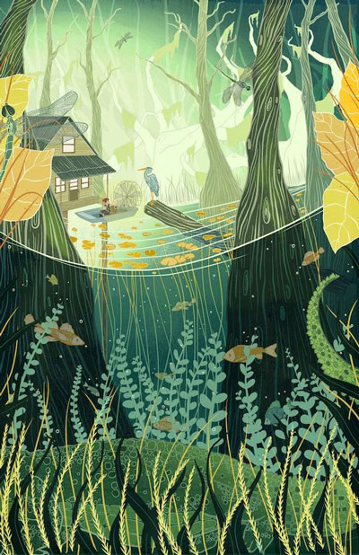
    <small>Image by Kailey Whitman</small>
<!----END OF WEEK TWO----->          
        
<!----START OF WEEK THREE----->  
<h2 id="week03">Week 03- tutorial notes</h2>
        <ul>
        <li>Deliverable 01=30%/ 02=30%/ 03=40%</li>
        <li>Illustration can be anything you want it to be</li>
        <li>Old: pencil/pen/photocopier/fax/collage</li>
        <li>Marion Deuchars</li>
        <li>Dan Fern</li>
        <li>Paul Elliman</li>
        <li>Jake Tilson- collage style-consider for own app</li>
        <li>Current: tablets/vectors/graphics tablet etc</li>
        <li>Olly Moss</li>
        <li>Michael Rose</li>
        <li>Rogie King -vectors</li>
        <li>Breno Bitencourt</li>
        <li>Kyle Tezak</li>
        <li>Should consider a timeline-good for knowing how it works</li>
        <li>Oliver Jeffers</li>
        <li>Peter Strain</li>
        <li>Atto Partners</li>
        <li>Jordan Henderson</li>
        <li>Paddy Donnelly</li>
        </ul>
    <p> Tasks to carry out for next week:</p>
        <ol>
        <li>Recreate a city Scape</li>
        <li>Wireframes-consider onboarding-low/mid file/high def file</li>
        <li>look at different icon designs</li>
         </ol>
        <br>
<h2>Tumblr Posts</h2>
    <h3>App Icons</h3>
        <p>So I decided I would recreate some icons for my digital wireframes, some may need some progress and I will be doing more for my prototype but this is what I’ve done so far.</p>
        
        <p>So this if my first Icon there isn’t alot of colour I just wanted to keep it plain for the time being, to see if it works</p>
        <br>
        <p>I used the image below as my reference point, I like the simplicity and how it uses grey and white to keep it plain. </p>
        
        <hr>
        
        <p>This was my second icon created for New York, I really like this one however I do feel the flame and he hand could do with some work. I like the simplicity and how there is a consistency with the White House icon.</p>
        <br>
        <p>I used the below image as a reference point, I really like it because of the thick lines and simple detailing.</p>
        
        <hr>
        
        <p>This icon was created for Florida, it is a simple palm tree, with grey lines, consistent to the other icons, which I want to have throughout my icons.</p>
        <br>
        <p>Below is my reference image for Florida symbols, I struggle to find one that really symbolised it, but I really like palm trees which lead to my choice.</p>
        
    <h3>Marion Deuchars</h3> 
        
         
        <p>I would like to make my app as illustrative as possible, therefore I decided to look at Marion Deuchars, who has a very peculiar style, but it really stands out compared to illustrators- part of why her work is such a success.</p>
        
        <p>I particularly like these pieces where she uses a simple fingerprint to create textured characters from.</p>
        <p>Marion’s not only created a Christmas advert for John Lewis, but also contributed to graphic design for the Spanish Vanity Fair Magazine.</p>
        
        
      <h3>Dan Fern</h3> 
        <p>Like Marion, Dan’s work is also very unique, I’m personally not a huge fan of his work, however I feel he is one of the great artists who mastered their craft, but in my opinion I don’t like the flat vibrant colours, as I find them distracting and very harsh on the eye.</p>
        
        
        
    <h3>Dan Fern</h3> 
        <p>I really really like Jakes rough collage style, something I would really love to incorporate into my app, as the content within deserves to have a rough exterior due to it being about criminals.</p>
        
        
        <p>I think it may be difficulty to get the the same rough aged outcome due to it being doing with actual paper.</p>
    <h3>Olly Moss</h3> 
        <p>I have previously looked at Olly Moss for last semesters work, however I really do love his work so why not look again!</p>
        
        
        
        <p>Olly’s work on movie posters is so unique and really captures the essence of the movies story and mood. His work is very clean and illustrative, and something I would really love to aspire to.</p>
    <h3>Rogie King</h3>  
        <p>I had never heard of Rogie King before Kyle had mentioned him, I really love his work, it is so illustrative and captures personality in the illustrations.</p>
        
        <p>I really like his simpler avatars, they used flat colours, but work really well, again because it captures the personality of the character.</p>
        
        
    <h3>Breno Bitencourt</h3> 
        <p>I LOVE LOVE LOVE this artist’s work!!! It is so beautifully detailed and using colours and shapes to create absolute masterpieces!</p>
        
        
        
        
        <p>Again I never heard of this artist before Kyle mentioned it, but I would love to maybe recreate something like this because they are so beautiful, they vary from cartons to portraits, they are really are another level that take so much time and skill.</p>
    <h3>Kyle Tezak</h3> 
       <p>Kyle Tezak, another visual master, who can recreate dull and boring icons into visual masterpieces that are extremely illustrative and  so different to other UI designers. I would love to be able recreate something along these lines, they are eye-catching  and really detailed.</p> 
        
        
        
        
        
     <h3>Oliver Jeffers</h3> 
        <p>Oliver Jeffers is an old student of Ulster University, his work is so original and unique. I wanted to look at his work because he is a brilliant illustrator.</p>
        
        
        
        <p>His style is so broad and he uses so many different mediums and materials, which makes him so successful. Definitely worth the look</p>
    <h3>Peter Strain</h3>
        <p>Peter Strain is another student who went to Ulster University who style is so unique and uses typography and illustrations to create his work.</p>
        
        
        
        <p>His style reminds me of Breno Bitencourt, it really unique and really captures the personality, and character of the person he is illustrating.</p>
    <h3>Jordan Henderson</h3>
        
        <p>Jordan Henderson, another student from Ulster University, who’s work is so incredibly detailed and really stunning and captures a moment within the images he creates.</p>
    <h3>Paddy Donnelly</h3>
        <p>Paddy Donnelly is an extraordinary illustrator who, again, studied in Ulster university!(you seeing a consistency here..) Again, like Oliver Jeffers, his work varies in style, however his work is more digital art than any other medium.</p>
        
        
        
        <p>I really like the different pieces he creates and how he doesn’t just stick to the same style and same different imagery.</p>
    <h3>Different Icon styles</h3>
        <p>Outline</p>
        
        <p>I really like this style of icons, because it is really simple and effective, and still allows the designs to be recognisable.</p>
        <br> 
        <p>Glyphs</p>
        
        <p>I think these are effective and professional, however, they are quite plain and boring.</p>
        <br>
        <p>Filled</p>
        
        <p>I think these are really good, but they are a bit childish and may not be suitable for my app due to it being based on serious history.</p>
        <br>
        <p>Flat</p>
        
        <p>I really like the different colour tones that make these icons stand out, however I don’t know if I would be able to effectively carry out these icons without more practise.</p>
        <br>
        <p>Hand Drawn</p>
        
        <p>I love this icon type, but they can be very detailed and may not be appropriate for smaller icons as they may lose their readability, making them unsuitable and unprofessional.</p>
        <br>
        <p>Skeumorphic</p>
        
        <p>I do like the Skeumorphic Icon style, however I do feel it is rather outdated and doesn’t work on a smaller scale(the Instagram icon on the left is Skeumorphic).</p>
    <h3>Digitising my wireframes-First Draft</h3>
        <p>So after my first paper draft I thought it might be good to digitise my idea to see if it works digitally, if it is too plain and what could be done to improve the idea better.</p>
        
        <p>So these are the first two wireframes, the left one is a rough idea of what the home screen will look like, clearly it needs a lot of improvement, but this is a rough layout of for scale and proportions, in this screen I would like to incorporate a college style based on Jake Tilson’s style, of very rough and dirty-suitable for the app content.</p>
        <br>
        <p>The second screen is what is brought up on the screen when you swipe up on the home screen, it is based mostly on more detailed illustrations, which is what I would like, I do not have a set colour scheme and will brainstorm, this throughout the week.</p>
        <br>
        <p>I fount it hard to create the illustration of state symbols, however the outcome is definitely worth it as it really works well on screen-better than on paper. However, the big problem is the name of the app and how the home screen will be effectively carried out.</p>
        
        <p>The left artboard is the same as the above, however zoomed in so more detail can be seen. I would like to layout the next screen- the description screen like the right dartboard, I would like to make the image more illustrative by perhaps recreating it, but I like how the state symbol is carried on to the next screen so it is consistent and explanatory to what state your on. I would like to improve the overall appearance but I feel this layout is something I could work on.</p>
        
<!----END OF WEEK THREE----->  

        
<!----START OF WEEK FOUR----->  
<h2 id="week04">Week 04- tutorial notes</h2>
        <ul>
        <li>Illustration in UI. Art in Action</li>
        <li>Completed icon set</li>
        <li>Idea for app</li>
        <li>Travel app-into interface</li>
        <li>Presentation=Key</li>
        <li>create icon/brand/atleast 3 screens</li>
        <li>Picture= 1000 words</li>
        <li>Illustration can convey complex info in simple ways</li>
        <li> The essence of illustration-to clarify/to enlighten</li>
        <li>show/convey features</li>
        <li>Illustration in UI= meaningful/recognisable/attractive/improve UX+usability/harmonic</li>
        <li>Can solve problems</li>
        <li>Quote from Mark Boulton</li>
        <li>Thematic-journey</li>
        <li>Meomi</li>
        <li>Include icons-descriptive</li>
        <li>Diagrammatic</li>
        <li>Data Visualisations</li>
        <li>Hyper realistic/vectors</li>
        <li>High detailed hand drawings</li>
        <li>Onboarding=boost usability/tutorials/rewards</li>
        <li> first app to do this=goalla-badges/icons</li>
        <li>Theme and Style- research and post workflow</li>
        <li>Flickr / stumbleupon</li>
        </ul>
<p> Tasks to carry out for next week:</p>
        <ol>
        <li>Finish master-apprentice</li>
        <li>Illustrating UIs- sketch/illustrator</li>
        <li>Improve existing icons</li>
        </ol>
        
<h2>Tumblr Posts</h2>
        <h3>Symbols representing states in America</h3> 
        <p>So I would really to recreate some of the symbols for different states in America, these are a lot of the main states that are known to tourists- which is appropriate for my app, as I want to encourage people to travel around America, even though my travel is based on historical criminals, I would like to bring in some so of rewards scheme for those who travel to the different states.</p>
        <br>
        <p>California</p>
        
        <p>Chicago</p>
        
        <p>Oklahoma</p>
        
        <p>Texas</p>
        
        <p>Alaska</p>
        
    <h3>City Scape -Master Apprentice</h3> 
        <p>As part of IXD104  we had to practise our illustration skills my recreating a cityscape, I chose the India city scape to recreate.</p>
        <br>
        <p>Original</p>
        
        <p>My Recreation</p>
        
        <p>With a different colour palette</p>
        
        <p>Truthfully, mine is clearly not as good as the original, however I gave it my best go. I did struggle with the proportions and the more complex shapes but for my first try I think I gave it a good shot.</p>
    <h3>Week 04 Lecture Material</h3> 
        <p>So last week in our lecture it was discussed the importance of Illustration in UI.<br>
        The essence of illustration is to clarify and to enlighten, which is why it is so useful in UI as you don’t need to understand the language to understand the icons. <br>
        Illustrations in UI can be attractive and improve usability, illustrations can vary from mascots, such as mail chimp mascot, to high detailed hand drawings.</p>
        
    <h3>State Icons</h3>  
        <p>Before</p>
        
        <p>After</p>
        
        <p>So after some feedback I realised my icons were not up to standard so I worked on trying to improve the appearance. I have purposely kept them grey and white for the minute, as a colour Pallette has not been established for the final app. I feel the improved White House for Washington is a huge leap from the first, it is more professional, the circle makes it look cleaner than the oval and there is a lot more detailing.</p>
        <hr>
        <p>Before</p>
        
        <p>After</p>
        
        <p>So for the Florida state I chose a palm tree icon, I feel the reason is improved is because it is more consistent to White House, and the circle improves the overall appearance. Once I get my colour Pallette I feel that I might try to add so flat tones to create more depth and texture.</p>
    <h3>Chrysler Building</h3> 
        
        <p>So for New York I decided to recreate the Chrysler Building, an iconic Art Deco building. I did struggle with this more so than the other icons so far, however I think the outcome is effective, it is simple, however I don’t want the icon to lose readability on a smaller scale</p>
     <h3>San Francisco Bridge</h3> 
        
        <p>Unfortunately, Tumblr doesn’t really agree with me when it comes to image quality, so this is another icon I created, based of the San Francisco bridge, an Iconic land mark in the California state. It is very simple, but I want this simple consistency throughout.</p>
    <h3>Chicago Bulls</h3>
        
        <p>I chose to recreate the Chicago Bulls, as it is iconic to the state, however I didn’t want to chose copy it as I want the icons to be unique to my app, only issue is some users may mistake the bull as representing Texas, so I might consider added small text underneath to highlight the state name.</p>
    
<!----END OF WEEK FOUR----->  
        
<!----START OF WEEK FIVE----->  
<h2 id="week05">Week 05- tutorial notes</h2>
        <ul>
        <li>Tying it all together</li>
        <li>3 Screens=finished</li>
        <li>Icon set/Illustration/Idea/paper UI</li>
        <li>Include visual layers</li>
        <li>Drop Shadows=subtle</li>
        <li>Consistency</li>
        <li>Talk about prototype possibilties eg animate- feedback to user-know something is happening</li>
        <li>Metaphor-use something that is familiar</li>
        <li>Direct users in right way</li>
        </ul>
    <p>Principles of UI</p>
        <ul>
        <li>Format content</li>
        <li>Touch controls-apple user interface guidelines</li>
        <li>Jakob Laws-Laws of UX</li>
        <li>44pts by 44 pts</li>
        <li>Text size must be appropriate</li>
        <li>Medium-blog website</li>
        <li>Contrast-vision impairment</li>
        <li>Screen spacing-padding</li>
        <li>Distortion-images correct size</li>
        <li>Organisation</li>
        <li>Quote on Hicks Law</li>
        <li>Alignment</li>
        <li>Apple 44px/Microsoft 34px/Nokia 26px</li>
        <li>45-57px index-average</li>
        <li>Gaps between button-appropriate size so you dont choose wrong choice</li>
        <li>72px target-touch target spacing</li>
        <li>Could try out what the appearance would be-post on tumblr</li>
        <li>testing with keynote/invision</li>
        <li>Colour=2nd most important</li>
        <li>Colour pallette and text choice- what and why?-post on tumblr</li>
        <li>Monochromatic(-might be good to look at for different oranges-different accents)</li>
        <li>Analogous-which vibrancy</li>
        <li>Complimentary colours eg green messaging with red notifications</li>
        <li>Customer colour scheme-adobe colour premade</li>
        <li>Look at other colour schemes of successful apps</li>
        <li>Contrast and text readability</li>
        <li>WebAIM-gives you contrast ratio</li>
        <li>Specific elements on screen-call to action that is highly contrasted</li>
        <li>Van Restorff effect-key info should stand out</li>
        </ul>
         <p> Tasks to carry out for next week:</p>
        <ol>
        <li>Tying it altogether</li>
        <li>Presentation</li>
        <li>UI on Illustrator/sketch</li>
        <li>Sketch app resources- wwww.syma.co.uk/freebies/</li>
        <li>App should have brand</li>
        <li>Mockups</li>
        <li>Research on blog</li>
        </ol>
<h2>Tumblr Posts</h2>
        <h3>Colour Palette</h3>
        <p>So for the app, I really need a colour Pallette, so I began brainstorming colours, to suit the mood and seriousness of the content. I was brainstorming what colours I would relate to certain moods, but. a key feature of the colours was the American prison suit which is orange and white. The colours I felt would create a good complimentary colour scheme would be greys, whites, blues and oranges.</p>
        
        <p>I felt the next step was to see the colour scheme and what colours work along one another.</p>
        
        <p>I felt these colours really worked together(Tumblr has changed them slightly) and I think all the different colours work separately and together, which makes it appropriate for the app, I feel the navy/blue really compliments the orange and grey and helps tie them whilst injecting some sophistication and makes the colour scheme more interesting.</p>
<!----END OF WEEK FIVE----->  
        
<!----START OF WEEK SIX----->
<h2 id="week06">Week 06- tutorial notes</h2>
        <p>Group critique-ABSENT</p>
<!-----END OF WEEK SIX----->
        
<!----START OF WEEK SEVEN---->
<h2 id="week07">Week 07- tutorial notes</h2>
        <p>ABSENT- St Patricks Bank Holiday</p>
        <h2>Tumblr Posts</h2>
    <h3>Paper to Prototype</h3>
        <p>Unfortunately I haven’t posted as much on IXD104 as I would have like so I will be spamming the hell out of Tumblr with posting all my work I’ve been doing in the past few weeks to catch yous all up!</p>
        <br>
        <p>Colour!</p>
        <br>
        <p>So I really hit a brick wall when it came to my work involving how to present my app- what way the icons would look/work etc. So I am going to upload some of my brainstorming and the processes I’ve been going through!</p>
        
        <p>So my previous IXD104 post included the colour pallette but here’s the brainstorm that led to the colour choices! Below is an image of what the colour scheme ended up as.</p>
        
        <p>Brand!</p>
        <br>
        <p>Every App needs a brand, and what better way to do that then creating a name, monogram, word mark and visual marque. I used similar techniques that I learned from our IXD103 to help create a more effective brand.</p>
        
        <p>First step was creating an app name, I didn’t want the standard like America’s most wanted or Crime in America, I wanted something that was interesting and different and would attract people, and something that isn’t to ‘wordy’ so I came to the conclusion of Infamous Crime, as the app is about crime, and I chose some of the most infamous criminals in America within the content.</p>
        
        <p>I then brainstormed some images that I relate to crime in general mainly, not so much focusing on just America because the app could be broadened to a wider area. I wanted to have an idea of what could be incorporated in monograms and visual marques.</p>
        
        <p>So I quickly brainstormed word marks, monograms and visual marques, and chose one of each to digitise, I didn’t want to spend a lot of time on the brand as it is an extension of the app but not the app itself, something to make it look more professional etc. I find that sometimes less is more especially when working on small scale as the images need to have good readability on a small scale.</p>
        
        <p>For the word mark I had an idea on the type of font I wanted- slab serif- but not the specific font, so like IXD103 I decided to lay out all of the possibilities of fonts that I liked and chose my favourite.</p>
        
        <p>So I chose to Slabo 27px, and I liked the kerning and how the lettering doesn’t take up as much space vertically.</p>
        
        <p>Out of all of the Monograms I really liked the idea of using the letters to create a tool that is used in crime investigations, I did remove the serif at the top of the C as it didn’t look like a magnifying glass.</p>
        
        <p>I purposely used this as a visual mark also, but elaborated it more, so I added a curved vector to partially complete the magnifying glass. I deliberately made the line thinner, so that the Monogram is is clear. I added a curved upside down triangle to create a shin effect.</p>
        
        <p>This was the brand so far, before incorporating a colour scheme.</p>
        <br>
        <p>Splash Screens.</p>
        
        <p>So splash screens are there to reinforce the brand, they are usually very simple and minimal, so I brainstormed some different ideas, and decided the best way to reinforce the brand would be to use the visual mark. I then digitised my idea.</p>
        
        <p>This is a zoomed in version of mainly the visual mark, but I felt the visual mark was not enough so I decided to add the word mark.</p>
        
        <p>I thought the colour scheme made it look a lot more professional, however I may adapt it to make it a bit brighter.</p>
        <br>
        <p>Home Screens!</p>
        <br>
        <p>As I usually do, I brainstormed on paper first to quickly sketch out my ideas.</p>
        
        <p>My initial idea was to have a criminal to stand behind bars holding the photo card up, but instead of it saying their name having the App name and visual marque on it. However, when I thought about the digitising I realised the background would be very dull and blank, so I decided to incorporate the location and but some of the land marks of America’s states in the Background, I really liked this idea. However I also liked number 5, as I liked the idea of a simple home where Navigation was clear, so I decided to digitise both of them.</p>
        
        <p> really liked how this illustrative home screen turned out, however I felt it was a bit dull and plain, when it came to the colours.</p>
        
        <p>I felt this idea worked better on paper than on screen, but there wasn’t a lot of opportunity to brighten it up and make it more exciting.</p>
        <br>
        <p>I decided to choose the first home screen as my final, however refinements do need to be made to it wasn’t so black and white and a bit more colourful.</p>
        <br>
        <p>Criminal Icons!</p>
        <br>
        <p>Whilst doing my research (previous posts) I always liked flat icons, where the colours where there were not gradients and they were kept simple. So I decided this may be the best way forward for my criminal icons. However, they had to be consistent with my state icons, so I decided that size, shape and colour schemes would help this. But, Again it was easier for me to doodle my ideas on paper, so thats what I did.</p>
        
        <p>So I looked at some of America’s most infamous/notorious criminals, and simplified their features down to hair, face shape, facial hair, and iconic accessories such as glasses, or Al Capone’s hat, hair colour would come later while digitising. These were my icon ideas for the faces, but I wanted a consistency throughout and decided that when digitising I would add shoulders and a prison outfit. I narrowed down who I would choose to digitise because women were quite hard to make different I decided to do men only, as they were easier to make a diverse range due to facial hair and hair style.</p>
        
        <p>I decided the previous colour schemes oranges were very harsh to look at I decided to lighten them, while still having an orange incorporated, I created the icons alongside the state icons, so I always had a reference point to ensure consistency and colours. I decided to add a flat tone to the faces with one side darker, to make them stand out to the background, as add some depth. I used my original sketches to trace, the icons, as I still struggle to create them without having some sort of reference.</p>
        <br>
        <p>As I changed the colour scheme I made the necessary adjustments to the visual mark.</p>
        
        
        
        <p>I decided I would make a home button as you can see within the criminal icons, however I feel it is very flat and boring, but I would use it for the moment until I come up with a better solution.</p>
        <br>
        <p>App Icons</p>
        
        <p>So I had to try out different icon sizes for my brand and app, so that I knew it worked on a range of scales.</p>
        <br>
        <p>I really like my visual marque for this purpose as it works on a lot of different icon sizes, which makes it successful for its purpose.</p>
     <h3>Paper to Prototype- Part 2</h3>
        <p>It is hugely important to me to start as I mean to go on, so Kyle suggested in one of our previous lectures to use current UI designs from successful businesses as a reference point on how they lay out their UI etc.</p>
        <br>
        <p>I decided that Apple was one of the best developers to look at, so I went and research their Developer guide and learned some different elements of their design, which I will now upload and show how I implemented this in my own work.</p>
        <br>
        <p>Type Hierarchy</p>
        
        <p>So I decided there should be a clear hierarchy on how text, such as headings, sub headings and content should be laid out, and I wanted to implement this in my own work. So I decided using this as a reference point I would made a clear hierarchy.</p>
        
        <p>So I made the splash screen 48 points, however this is not the size apple recommend, I did this as I wanted the text to be larger on the splash screen.</p>
        
        <p>For my Title I went for the size 34, which is recommended in the Apple guidelines.</p>
        
        <p>For the sub-headings I went for the size 28 that apple recommend on the title 2 as they are one below the title one size.</p>
        
        <p>For the main body I used size 23 as recommended in the apple guidelines.</p>
        <br>
        <p>Margins and Safe Space</p>
        
        <p>I wanted to add some margins around the screen, similar to how apple have a safe space there content doesn’t underlap the status bar etc.</p>
        
        <p>So I created these guides for placing on the screens so that I had an idea of how the placement should be.</p>
        
        <p>The margins around were 13 points thick, I felt this was an appropriate size, however this screen looks quite cramped, something I may revise at a later stage of development.</p>
         
        <p>It also discusses how buttons should not be extended to the edges of the screen as it may not appear to be a button.</p>
        
        <p>I used the two rectangles as a guide of placing the buttons with the same spacing, although the buttons aren’t rectangular I may revise this as I do not like the home button. The purpose of this is to show how I implemented the margins in this area and gave it appropriate spacing.</p>
        <br>
        <p>Button sizes, and Touch Targets</p>
        
        <p>I wanted to implement touch targets and have enough space around the buttons so you can easily use the app, for general population, not just a select few.</p>
        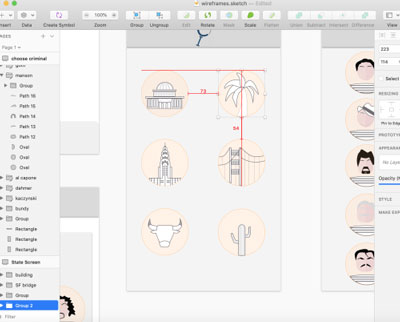
        
        <p>So as you can see, I made sure there was ample spacing around the navigation buttons, however, I may reduce the number of criminals in one screen, to make it more consistent with the 6 buttons on the state screen, and to allow more spacing around the buttons</p>
        
        <p>However I did ensure the buttons were large enough that they could be used, with these navigation buttons being far larger than the minimum size of 44 pts x 44pts</p>
        
        <p>This applies to the smaller navigation buttons in the banner, as they are 60pts x 60pts.</p>
        <br>
        
        
<!----END OF WEEK SEVEN----->
 
<!----START OF WEEK EIGHT----->
<h2 id="week08">Week 08- tutorial notes</h2>
        <p> Intoducing Infographics-the art of information</p>
        <ul>
            <li>Data is art</li>
            <li>Johnny cash project</li>
            <li>Big data</li>
            <li>Collection of data sets so large it’s hard to comprehend </li>
            <li>Netflix </li>
            <li>Information is beautiful.net</li>
            <li>Apollo infographic</li>
            <li>Small talks</li>
        </ul>
    <h2>Tumblr Posts</h2>
    <h3>What is an Infographic?</h3>
        
        <p>So what is an Infographic? An infographic is a visual representation of data and information through the use of charts, illustrations and other forms of icons and visual charts.</p>
        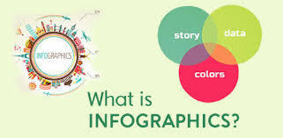
        <p>It is key to understand the date and information within your research before doing and visualisations of the information, it is key to use appropriate colour palettes and to tell a story with your infographic.</p>
        
        <p>Its purpose is to show a large quantitative data quickly and clearly for the intended audiences.</p>
    <h3>Pinterest Infographics</h3> 
        <p>A board created of some of the Inspiration I found via Pinterest.Below I am going to discuss some of my favourites from my Pinterest board and explain why they are, and some of the things I do and do not like.</p>
        
        <p>So this one is in a different language, but it is an extremely successful infographic as I get the essence of what the content is about.It uses large images and icons that is relevant to the content which makes it easier to understand. However,  I think the colours used within this are quite harsh and too vibrant, its is very distracting from the content</p>
        
        <p>Unfortunately, Tumblr really hates my images and doesn’t want to show them in a good quality, therefore if you want to see the other versions please look on my Pinterest page. But back down to why I like this infographic- I particularly like the mixture of outline and filled icons/graphics with the extremely simple considered colour palette. However I don’t really like the layout of the info as some of the content is slanted, and some information refers to other content, I think the flow of the infographic is quite confusing.</p>
        
        <p>I really like this Infographic due to images referencing the content, I also like the simple colour palette and how it uses the green colour to highlight information that may be overlooked. However I don’t like the inconsistency of hierarchy of font size, as well as some of the type being placed vertically making it harder to read. It is very word heavy which makes it quite boring and hard to read.</p>
        
        <p>I really like how this artist has worked with a limited colour palette and made the imagery seem like line drawings. I really like the flow of the content and how it gradually brings you to the bottom of the sea. It really uses illustrations well to discuss the content instead of huge amounts of text. I can’t really see any fault within this poster as it is really visual and descriptive.</p>
        
        <p>I really like the topic of this infographic and how it flows and the illustrations in the top right hand corner. Although I feel there are a lot of opportunities where illustration could have been used to display statistics instead of numbers, for example, at the bottom instead of 85% of users are female, they could have used little coloured people representing what that means visually. The pros and cons could have also been emphasised in different colours or to show how they differ, as it just looks like a mass of content. I really don’t like the hierarchy of subtitles and as the pros and cons could be aligned with the social media name, and if the colour difference wasn’t there you wouldn’t see a huge difference. Although there are quite a few downsides the poster is consistent throughout.</p>
        
        <p>I really like how the infographic represents people in simple ways yet is still really effective. However I do feel the size of the content text is very small and content could be made bigger so it is easier seen and read.</p>
        
        <p>I like this infographic, due to the simple colour palette, and the flow. I really like how the illustrations aren’t complex or difficult to recreate, and how there is a consistency throughout. However, some of the icons are filled, whereas some are outlines, which is quite annoying, but besides that I really like the poster.</p>
        
        <p>I really love the simple design of this infographic, and how it tells us alot of information about elephants in an eye-catching way. But unfortunately I feel the scale isn’t the best, as the huge elephant is brilliant as a centre piece, but if I were to improve it I would move the content down and increase the size of the illustrations and text size, to make it easier to read.</p>
        
        <p>I really like this poster design as it captures the main points and has illustrations to back this up. It uses a range of different styles which make some stand out more so than others. The poster shows a clear hierarchy and you can see clearly the points being made. The colour Palette is simple yet effective, with the ability to highlight certain areas effectively. I feel that the content is quite text heavy, and the type could be made larger to make it easier to read.</p>
    <h3>Infographics on the web</h3> 
        <p>So whilst doing some research on Infographics I found some that had unknown artists but would I would still like to discuss which is what I am going to do below.</p>
        
        <p>So I really like this poster as it uses illustration as its main resource, It is colour with a consistent colour palette throughout. I really like how you are directed to the different points from the centre outwards, however I don’t like how it goes anti-clockwise and jumps from either side of the diagram to get to the second and third point. However the main issue with this poster is that the typeface is quite hard to read and very small in comparison to the illustration. it has also got a lot of unnecessary shapes and bubbles which could have been reduced or removed.</p>
        
        <p>I really like how this clearly shows that you need all these values to be equal and support one another, and how it represents that you need all for it to work.  The considers colours, as a key and uses illustration and colour to create a key which is discussed underneath. Although I don’t like how text heavy it seems and how narrow the columns are making them feel very limited to space.</p>
        
        <p>I really like how there is a very subtle colour scheme and how it uses the different parts of the fork to show the findings. However I don’t like how the logos are very crushed at the bottom, as well as how the type is at a slant, so you have to tilt your head to read it properly.</p>
        
        <p>I chose this infographic to discuss mainly for the colour palette as it is very simple, yet very eye-catching and striking. Of course this is far to content heavy as a whole but the small sections demonstrate information very well with a variety of different charts and illustrations.</p>
    <h3>Let the Brainstorming begin</h3>
        <p>Now that I have an idea of what does and doesn’t work its time to start working on my own infographic- and I have to pick a subject. The best way I find on narrowing down my ideas is through brainstorms which is exactly what I’m about to show you.</p>
        
        <p>So although my brainstorms are a bit rough and messy- I find it the easiest way to collect data and ideas. After brainstorming I narrowed it down to mental health and crime, as I want my infographic to have an impact and for it to be about something important. I chose that my infographic would be about Mental Health as my app is already about crime- although they would tie together and be about different subjects I found that perhaps something new may motivate me more.</p>
    <h3>Master Apprentice</h3>
        <p>Original</p>
        
        <p>My Version</p>
        
        <p>With a revised colour scheme</p>
        
        <p>So I recreated the charts and gave a different colour scheme to show a different version of what it could look like, I didn’t have a lot of difficulty except making sure the fonts, font size were appropriate and that the spacing between the bars were appropriate.</p>
<!-----END OF WEEK EIGHT----->

        
<!----START OF WEEK NINE---->
<h2 id="week09">Week 09- tutorial notes</h2>
        <p>Designing Infographics</p>
    <ul>
    <li>Knowledge is beautiful- David McCandless</li>
    <li>The power of visual story telling infographics</li>
    <li>What should I have so far? 3 app screens(at least) and Master Apprentice</li>
    </ul>
    
        <p>1.The Death of Words</p>
    <ul>
    <li>A pic=1,000 words</li> 
    <li>Words to pictures</li>
    <li>Infographics help fill the gap between words and graphics</li>
    </ul>
        
        <p>2.Rise of Infographics</p>
    <ul>
    <li>Quote</li>
    <li>Infographic- read and understand quickly</li>
    <li>Not a new thing</li>
    <li>Air BNB</li>
    <li>Get Invited Infographic</li>
    <li>Infographics=subjective</li>
    <li>Data Visualisations=objective</li>
    </ul>
        
        <p>What makes a good Infographic?</p>
        <ul>
        <li>Utility/soundness+beauty</li>
        <li>Utility=commuinicate data</li>
        <li>Explorative=scientific</li>
        <li>Narrative=message/story</li>
        <li>Soundness- Meaningful/interesting</li>
        <li>Beauty- should be attractive/appropriate/how story is told</li>
        <li>Illustration+Data+Typography</li>
        </ul>
        
        <p>The Process</p>
        <ol>
        <li>Process your data</li>
        <li>Check your sources</li>
        <li>Create a wireframe</li>
        <li>Format with purpose</li>
        <li>Have a story</li>
        <li>Set the tone</li>
        <li>Think outside at a type</li>
        <li>Still consider your type</li>
        <li>Control the colour</li>
        <li>Utilise white space</li>
        <li>Take a break</li>
        <li>Beware of TMI</li>
        <li>Proof read 3 times</li>
        <li>Test along the way</li>
        <li>Make Revisions</li>
        </ol>
        
        <p>To consider:</p>
        <ul>
        <li>Changing colour/shape makes it stand out</li>
        <li>Redraw bar charts</li>
        <li>World populations</li>
        <li>Include sources</li>
        <li>Data viz project</li>
        <li>Wireframe stage</li>
        <li>Week 12=critique</li>
        </ul>
        
        <h2>Tumblr Posts</h2>
        
        
<!-----END OF WEEK NINE----->
        
<!----START OF WEEK TEN---->
<h2 id="week10">Week 10- tutorial notes</h2>
        <p>A Cornucopia of charts</p>
        
        <ul>
        <li>Diagrammatic approaches to data</li>
        <li>Convert Statistics into something that can be easily understood by as wide an audiences as possible</li>
        <li>Ancient info- complex stories on basic symbols</li>
        <li>Pictograms still most used in non rich stories told via pictograms to give messages</li>
        </ul>
        
        <p>Origians of Charts</p>
        <ul>
        <li>Social Sciences</li>
        <li>Mathmatician</li>
        <li>1869 Infographic</li>
        <li>1821 barchart</li>
        <li>Playfair everyday temperature-line graph</li>
        <li>Playfair pie chart</li>
        <li>Ian Spence- historian</li>
        <li>Periodic table- of grame controlles</li>
        <li>Polar area diagram by Florence Nightingale</li>
        <li>Isotype- otto neurath</li>
        <li>Motor Vehicles- kraft stand der erde</li>
        <li>Dr john snow 1813-1854- two maps</li>
        <li>The ebola epidemic</li>
        <li>Visualising Us</li>
        <li>Der Mensch als- Industriepalast</li>
        </ul>
        
        <p>Charts today</p>
        <ul>
        <li>Choosing the right visualisation=essential</li>
        <li>Trends - over time</li>
        <li>Correlations- comparison</li>
        <li>Outliners- unusual data- doesnt fit into trends/correlations</li>
        <li>Know your data</li>
        <li>Quantitative- counted/measured</li>
        <li>Decided/continuous/categorical</li>
        </ul>
        
        <p>Guide to chart types</p>
        
        <p>Bar charts</p>
        <ul>
        <li>Vertical/horizontal</li>
        <li>Stacked/100% stacked</li>
        <li>Use horizontal labels</li>
        <li>Space bars</li>
        <li>Start y axis at 0</li>
        <li>consistent colours</li>
        <li>order data- alphabeticallys/sequentially</li>
        </ul>
        
        <p>Pie charts</p>
        <ul>
        <li>standard/donut</li>
        <li>Dont have more than 5</li>
        <li>dont use multiple pies for comparison</li>
        <li>make sure data=100%</li>
        <li>order slices</li>
        </ul>
        
        <p>Line Charts</p>
        <ul>
        <li>Include zero baseline if possible</li>
        <li>no more than 4</li>
        <li>Solid lines only</li>
        <li>label lines directly</li>
        <li>use right 1</li>
        </ul>
        
        <p>Scatter Charts</p>
        <ul>
        <li>Start y axis at 0</li>
        <li>use trendlines</li>
        <li>include more variable</li>
        <li>dont have 2 trend lines</li>
        </ul>
        
        <p>Bubble chart/map</p>
        <ul>
        <li>Make sure labels=visible</li>
        <li>should be scaled appropriately</li>
        <li>dont have random shapes</li>
        </ul>
        
        <p>Heat Maps</p>
        <ul>
        <li>Use simple outline</li>
        <li>Colur appropriately </li>
        <li>use patterns sparingly</li>
        <li>Choose appropriate data ranges</li>
        </ul>
        
         <p>10 data dos and donts</p>
        <ul>
        <li>One colour</li>
        <li>Do order appropriately </li>
        <li>Call outs- sections- icons throughout visualisation</li>
        <li>Data- easily comparable</li>
        <li>do use icons to reduce labels etc.- title each section</li>
        <li>Dont use high contrast colours- subtle colour palette</li>
        <li>Dont use 3D charts</li>
        <li>Dont use chart junk-unnecassary illustrations/styles/shadows</li>
        <li>Dont use more than 6 colours in single layout</li>
        <li>Dont use distracting typefaces- italic/underline/comic sans</li>
        <li>no more than 3 typefaces</li>
        </ul>
        <h2>Tumblr Posts</h2>
    <h3>Master Apprentice</h3>
        <p>Original</p>
        
        <p>My Version</p>
        
        <p>So I found this one a bit more complex, due to small details like the dots, which compared to the original are too large. I feel I did make a good attempt though.</p>
    <h3>Master Apprentice</h3> 
        <p>Original</p>
        
        <p>My Version</p>
        
        <p>Above is the version I created of the bar charts. I found the different colours difficult to achieve within the circle but eventually managed it. I was unable to find the exact font but went with a style similar.</p>
    <h3>Master Apprentice</h3>
        <p>Original</p>
        
        <p>My Version</p>
        
        <p>I found this slightly harder in some aspects due to there being more elements to it. However I do feel I gave a good attempt.</p>
    <h3>Infographics and Mental Health</h3>
        <p>Below I am going to discuss some of the Infographics that I found that are specifically about Mental Health- The theme I am going to base my Infographic on.</p>
        
        <p>So I really liked this Infographic because of how it breaks up the main points, but also because it is so eye-catching! I think the layout is really nice, but not something I would replicate because I have more information to discuss. I don’t really have alot of criticism on the poster, except one thing- I feel the cartoon 7 is very larger and overwhelming compared to everything else in the poster.</p>
        
        <p>I really loved this poster die to the colour scheme- which is very eye-catching. It is also so clear as to what it is about, it is clearly about mental health as the woman is wound down- it is a great metaphor for the poster. The only criticism is that I just wish the graphics were spread out more and a little larger.</p>
        
        <p>I really like how eye-catching this infographic is, and how it really captures the worrying warning signs by highlighting the title red. I think the yellow is a little harsh- but suits the urgency of the subject.</p>
         
        <p>So I really don’t like this poster on mental health, and I wanted to show bad examples and things I am personally going to try to steer away from- it is far too plain and not eye-cathing. The colour scheme is appropriate for the subject- but just not used effectively. Graphics could have been used to discuss the statistics. The information is not easy to read and there isn’t really a flow to the poster making it harder to read and less interesting.</p>
        
        <p>This poster is exactly something that I would like to strive for- with lots of icons, and limited text to make it easy to read- while still getting the message across. I’m not sure about the colour scheme- as it reminds me of something for environment posters and not so much mental health.</p>
    
        <!-----END OF WEEK TEN----->
        
<!----START OF WEEK ELEVEN---->
<h2 id="week11">Week 11- tutorial notes</h2>
        <p>Group Critique</p>
        
        <ul>
        <li>App 30%</li>
        <li>Infographic 30%</li>
        <li>Tumblr 40%</li>
        <li>Brian Suda- Designing with data</li>
        <li>Visual pauses</li>
        <li>Hierarchy</li>
        <li>Coloured backgrounds</li>
        <li>Keep lines</li>
        <li>put links on github then put that as a source</li>
        </ul>
    <h2>Tumblr Posts</h2>
    <h3>Finishing the App</h3>
        <p>Feedback- So I received some really constructive advice on how to improve my app.</p>
        <br>
        <p>The main areas I had to improve upon were:</p>
        <ul>
        <li>Add some context to the buttons- e.g. label them.</li>
        <li>New colour scheme is definitely needed!</li>
        <li>The layout of the description page needs improvement- more icons</li>
        <li>Add text to the home page text box</li>
        <li>Reduce the number of criminals in one page</li>
        <li>Improve the buttons- more space</li>
        <li>Home page needs to be brighter and bolder.</li>
        </ul>
        <p>So I decided to go away and make those improvement before going further with prototyping etc. First thing I did was redo the colour scheme- as it would be difficult to continue without it.</p>
        
        <p>So I brightened the grey and kept the light orange colour, and kept the Navy text as I think it looks better due to the contrast. I felt this definitely lifted the splash screen.</p>
        <hr>
        <p>The next thing was changing the home screen, which you will see below.</p>
        
        <p>So I replaced the monogram on the photo card as I felt that I had already reinforced the brand using the splash screen- and I wanted to add some content to the users as to what to do next. I then added a Blue background to brighten the whole app up- this would then allow me to use this throughout my app as a new base colour. It compliments the orange colour and makes the overall screen look brighter and more eye-catching. I added colours to the background that will only be used on this screen- I wasn’t to add more vibrancy to the screen as it will be the first thing to be seen. I added some flat tones to just improve the overall image and allow it to be more refreshing than the previous screen. I thought the blue background was very flat- therefore I added some lighter blue colours to help break it up. I also added a slight shadow under the navigation bar to make it stand out more the the user.</p>
        <hr>
        <p>I wanted there to be a consistency throughout the screens therefore the states and criminal pages will have consistent layouts throughout. I improved the buttons, colour scheme and added some context to the navigation on the screens.</p>
        
        <p>So I added some flat tones to all of the buttons- so it relates to the home screen, but nothing too harsh. I changed the home button as I just felt it didn’t work well, although it is different to the state/criminal button I do feel it is more of an improvement.</p>
        <br>
        <p>I then added a new coloured background and changed the top banner to match the new colour scheme. I then resized the visual marque at  in the banner to give it more space. </p>
        <br>
        <p>I replaced the Washington state button for the banner to a Florida- as I didn’t want to lose readability when scaling down, and the Florida state button is simple with little to it, making it easier to see and understand at a small scale, unlike the Washington.</p>
        <br>
        <p> I then added text under neath all of the buttons so that people are aware of what option they are choosing- as I cannot expect everyone to know symbols relating to the states. </p>
        <br>
        <p>I reduced the number of criminals per page so there is more padding around the buttons, and so that it is more consistent to the state screen, this meant I had to include a next and previous button to make navigation easier between the two screens.</p>
        <br>
        <p>I added some slight shadows to the buttons, so it was consistent to the navigation to the home screen and to also allow them to stand out to icons with no navigation.</p>
        <hr>
        <p>I then started to work on some of the issues regarding the description screens. First I created some ideas of icons on paper</p>
        
        <p>I then went on screen to create these. I chose a more appropriate icon for victims, which was a small coffin.</p>
        
        <p>So I realised that they were very text heavy, so I want to reduce that and break up the page. So I added some little icons that could represent the titles I had. So I had replaced date of birth to a small calendar, and replaced victims with a small coffin and sentencing with a prison cell. This allowed me to break up the content and place the victims and sentencing beside each other. I could not think of an appropriate way to represent description therefore I kept it the same. I then broke up the screen with different coloured backgrounds, and a slight shadow to them to add a definition to the screens. I also introduced a next button to allow users to go to the next criminal- in the order that they are shown on the initial criminal pages.</p>
        <br>
        <p>I realised an issue whilst creating these- as I chose the more notorious criminals, but not all are from the states I have chosen to create icons- this means I would have to put a location on some of these criminals so that it meets the needs of the app- as the point is to tell accurate information about these criminals. </p>
        <br>
        <p>This issue allows me to have the opportunity to add a screen for when there is an error, and add this to the prototype, for states with no criminals- this is for the purpose of the app only.</p>
        
        <p>So I had to rethink the layout and icons for the Jesse James and Jeffery Dahmer- criminals who are not allocated to a state, so I created a new icon- a small pin point icon to represent location- but this may not be clear- therefore I added a label for those who may not know. It is inconsistent, but is is consistent to the description heading which is beside- I am not overly happy with these screens as there will be an inconsistency throughout the app, but I feel this is the best way to amend my problem for now- if I have spare time before my deadline I may reconsider changing this or finding a different solution.</p>
        <hr>
        
        <p>Above are the screens of what will appear when you click on a specific state- Florida and Texas do not have any criminals assigned to them therefore, instead of leaving those states empty I created an error page.</p>
         
        <p>By reusing the home page, I edited the text to read an error message, which allows the user to swipe up to go back to the previous page. I thought this was a practical solution.</p>
        <hr>
        <p>Below I will be putting up some before and afters of the screens and how I improved them.</p>
        <p>Before</p>
        
        <p>After</p>
        
        <p>Before</p>
        
        <p>After</p>
        
        <p>Before</p>
        
        <p>After</p>
        
        <p>Before</p>
        
        <p>After</p>
        
        
        <p>Before</p>
        
        <p>After</p>
        
        
        
    <h3>Next Step- Prototyping</h3>
        
        <p>After finalising all of my screens I decided I would prototype the app using Invision. Below is a link to the project! I would really appreciate any feed back guys!</p> 
        <p>https://projects.invisionapp.com/d/main#/console/17172695/355961161/preview</p>
        
        
    <h3>Mental Health- Infographics</h3>
        <p>I have taken the time to thoroughly research into my subject area of mental health, and the statistics are honestly staggering.. The amount of neglect is outstanding and when you hear how this is a national tragedy on the news etc. its such an understatement to what is actually going on!!</p>
        <br>
        <p>So I decided that I will appropriately target some of the key issues and highlight the truth within my infographic to just show the impact it is having on so many people within our lives! I really just want to give this justice and do this infographic to create awareness, even though this is for a university project this means so much more to me, so if by my deadline it is not of a quality I am happy with I will continue to improve it until it is in my own time.</p>
        
        <p>I found a bump in the road whilst researching as these statistics are taken over every 6 years- which means a lot of these official government statistic date back to 2013/2014, however some statistics are in more recent years- so it will be a mixture of both.</p>
        
        <p>So what areas will I be discussing?</p>
        <br>
        <p>I found throughout my research statistics that I found very shocking, so I will address these first as I lead into the infographic.</p>
        <br>
        <p>In my findings, there was a real issue with stress being either a major trigger or contributor to mental illness- and how this impacts young people and how it impacts the older generations, this will be represented through different icons to support the statistics.</p>
        
        <p>I then wanted to highlight how the two genders compare to one another, and of course to be more inclusive, what happens when people aren’t aware of their sexual orientation and gender as this affects so many people, especially with the increased awareness of LGBT community in recent years, it has taken a toll on their mental health due to discrimination, hate crimes, and bullying.</p>
        
        <p>I will then lead into the affects of social media and how this is affecting young peoples mental health, as an increase of social media usage and mobiles has lead to mental health affecting younger generations more than ever. As unfortunately there has a been a rise in suicide rates, self harm, and eating disorders and researchers believe there is a strong correlation between the two. This could be due to not being able to escape bullying, or comparing yourself to celebrities on social media, but as I have seen and many others this is usually a facade and all is not as it seems.</p>
        
        
        <p>I was initially going to continue the infographic by going on to explain mental health on a global scale, but I have instead to decided to concentrate on Northern Ireland. I have done this because the infographic is based on the UK which we are a part of, it is my home and because we have the highest rates of mental health issues in the UK and it needs more awareness of why and how has this gotten so bad?</p>
        
        <p>I will finish my infographic with how evidence suggests that this epidemic is increasing and how may this affect our NHS who is currently struggling, could this affect younger generations and how much worse can this get?</p>
        
        
        
    <h3>Infographic so far</h3>
        
        <p>Tumblr really dislikes me and my images so has decided to make it extremely blurry! But this is my infographic so far, I have only to insert my statistics for Northern Ireland and The statistics that prove mental health is increasing.</p>
        <br>
        <p>Tomorrow I will be uploading my process on how I got to the digitising part </p>
        
        
    <h3>Paper drafts</h3>
        <p>I initially started my Infographic by research! Lots and lots of research! I wanted to focus a lot on Young people and the affect of social media and The overall Mental Health of Northern Ireland.</p>
        
        
        
        <hr>
        <p>I then thought of flow and how this could be presented.</p>
        
        <p>This was my initial idea, where instead of focusing on Northern Ireland I would focus on World wide facts, but I found it hard to get good reliable statistics so I decided to I would prefer to focus on my home Northern Ireland.</p>
        
        <p>This is the flow chart for the initial idea of content.</p>
        <br>
        <p>I then revised the content and this is the new layout, I wanted a flow throughout.</p>
        
        <hr>
        <p>I then wanted to have an idea of the colour palette before digitising.</p>
        
        <p>I have decided to choose the main colours as white, grey, blue and navy, due the relation between the mood and the content.</p>
        <hr>
        <p>I then decided to illustrate some ideas for icons on paper before digitising my ideas.</p>
        
        
        
        <p>I then started to digitise these ideas on sketch.</p>
        
        <!-----8th May 2019---->
            <h2 id="week13">8th May 2019- Tumblr Posts</h2>
        <h3>Information is Beautiful</h3>
                
                <p>So Kyle suggested we look at this book throughout the semester, I got it from the library and found it very inspirations, and it definitely influenced a lot of my work throughout this semester, such as colour palettes, brainstorming, simplistic icons, diagrams, sizing and shapes . Below are some of the images I took of the main sections that helped me become a better designer.</p>
                
                
                
                
                
                
        <h3>Knowledge is Beautiful</h3>
                
                <p>So similar to Information is beautiful, knowledge is beautiful was so unbelievably helpful when it came inspiration for my Infographic and app, as well as my website. Below are some of the section I found incredibly helpful when designing different elements.</p>
                
                
                
                
                
        <h3>My Infographic</h3>
        <p>So my infographic wasn’t fully complete for the group critique however I still got some constructive feedback, I was told that perhaps dividing each of the sections into different colours can allowing the poster to be easily navigated. However I didn’t want to go too far away from my colour palette which I have tried to restrict.</p>
        <br>
        <p>I was also advised that I should keep the arrows within the infographic as it makes it so much easier to navigate.</p>
        <br>
        <p>I took the advice but also learned to space my content better than the previous version, I took this from feedback given to other classmates.</p>
        <br>
        <p>I wanted my infographic to be more timely than anything, something suitable for the sensitive subject and something that really raises awareness appropriately.</p>
        
        <h3>Infographic link</h3>
        <p>https://ailsiseburns.tumblr.com/tagged/finalone</p>
        
        <h3>Travel App Final Touches</h3>
                
            <p>So I created some on boarding screens to create a more professional Travel App.</p>
                
                
                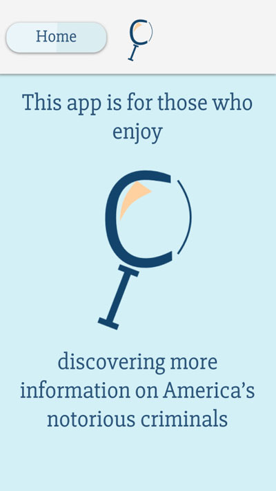
                
                
                <p>Above are the final screens I created for the on boarding </p>
        <h3>Pdf of Travel app screens</h3>
        <p>https://ailsiseburns.github.io/travel_app_screens/wireframes_final.pdf</p>
        
        <h3>Invision link</h3>
        <p>https://projects.invisionapp.com/d/main#/loading</p>
        
        <h3>Final App Posters</h3>
        
        

          